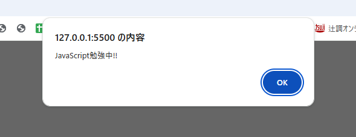

現在このファイルでは、htmlとCSSが読み込まれていますが、JavaScript（以下、JS）のファイルが読み込まれていません。
JSを使えるようにするために、[js]ディレクトリ配下にJSのファイルを作成してください。
※ファイル名は何でもOK。
jsファイルが読み込まれているか確認する方法は、開発者ツールを開き右上にある「Network」タブをクリック
→「JS」のタグをクリック→リロードして作成されたjSファイルが表示
→Status Codeが「200」「304」や（緑の丸）になっていたらOK!!
JavaScriptでは確認やエラーの追及のために(デバッグ)、console.logを使います(重要)
ここではconsole.logに「JavaScript勉強中」と記述し、開発者ツールで表示してください。
開発者ツールを開き右上にある「Console」タブをクリック
JavaScript勉強中と表示されていたらOK!!
ページを訪れる、リロードする、ボタンを押した時などにウィンドウの上辺りに表示されるのがalertです。
ここではページを開いた時に「JavaScript勉強中!!」というalertが表示されるようにしましょう。
下記のようになったらOK！
alertと似ていますが、サイト訪問時などに「OK」「キャンセル」の2択を迫れるのがconfirmです。
ここではページを開いた時に「JavaScriptの勉強を始めます。よろしいですか？」という文言が表示されるようにしましょう。
※問題3のalertのコードをそのままにして記述すると、ダブって出るので、問3のコードはコメントアウトしてください。
下記のようになったらOK！
下記の「JS学習スタート」ボタンを押したら問4でやったconfrimで、
「JavaScriptの勉強を始めます。よろしいですか？」という文言が表示されるようにしましょう。
上記の4問に比べると難易度が上がる問題です。少し難しいですがチェレンジしてみてください。
※ヒント ➀ボタンの要素を取得します(buttonタグのidを活用)、➁その要素を定義します(定数) ➂定数にイベント発生時(クリックした時)の処理を記述します。
ボタンを押して下記のようになったらOK！
Web制作で抑えておいた方がいいJavaScriptの知識
JavaScriptの機能は多岐に渡りますが、Web制作(HP・LP作成)で使うJSはそこまで多くありません(最初は多く見えますが・・・)
主には下記の用途でJSを使うことが多いかと思います。
これら複雑なものも分解していくとやっていることは単純です。
要素を分解していって小さなところから、どのようにJSが動作しているかを学んでいくと原理が理解できてくるようになります。
以下のリストはWeb制作におけるJSを理解して使っていくことにおいて必要なことです。
どれぐらい把握して、理解しているかをチェックしてみてください。
もし現在、全然理解できなくても大丈夫です。
学習を続けていけば腹落ちする時が来るのでコツコツと継続していってください。